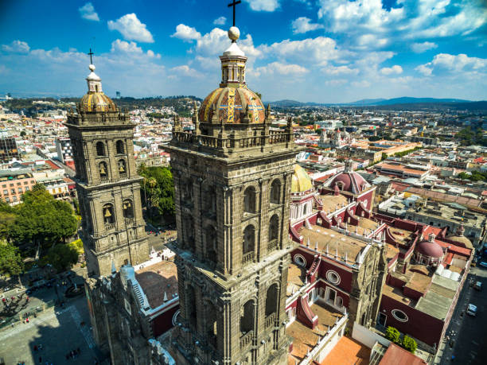

Puebla es un estado ubicado en el centro-oriente de México, con una rica historia y un vibrante patrimonio cultural. Su capital es la ciudad de Puebla, conocida por su impresionante arquitectura colonial, sus iglesias barrocas, y su rol crucial en la historia de México. Fundada en 1531, Puebla se convirtió en un importante centro comercial y cultural durante la época colonial. El estado cuenta con una geografía variada que incluye montañas, valles y volcanes, como el Popocatépetl y el Iztaccíhuatl, que son emblemáticos en la región.
Una de las tradiciones más destacadas de Puebla es la celebración del Día de la Candelaria, el 2 de febrero, cuando las familias se reúnen para celebrar con comidas tradicionales y procesiones. La ciudad de Puebla también es conocida por su festividad del 5 de mayo, que conmemora la victoria del ejército mexicano sobre las fuerzas francesas en la Batalla de Puebla en 1862. Además, el Festival Internacional de Puebla, celebrado en noviembre, es un evento cultural que incluye música, danza, y exposiciones artísticas locales e internacionales.
La gastronomía de Puebla es famosa por sus sabores intensos y sus platos tradicionales. Uno de los platillos más emblemáticos es el mole poblano, una salsa espesa y compleja hecha con chiles secos, chocolate, especias, y otros ingredientes, que se sirve con pollo o pavo. Otro platillo característico son las chalupas, tortillas pequeñas y gruesas cubiertas con carne desmenuzada, salsa, y otros ingredientes. Los tacos árabes también son muy populares, una fusión de la cocina árabe y mexicana, que consiste en tacos de carne de cerdo marinada y cocida en un trompo, similar al shawarma.
| Dato de interés | Dato de interés | Dato de interés |
|---|---|---|
| Puebla es famosa por su talavera, una forma tradicional de cerámica decorativa que se produce en la región desde la época colonial. La talavera de Puebla es conocida por sus diseños elaborados y colores vibrantes, y es un importante símbolo de la artesanía local. | El estado alberga el sitio arqueológico de Cholula, que es el sitio piramidal más grande en términos de volumen en el mundo. La Gran Pirámide de Cholula es una estructura monumental construida por las civilizaciones prehispánicas, y se encuentra sobre un volcán con vistas espectaculares. | Puebla es el hogar del Popocatépetl, uno de los volcanes más activos de México. Este volcán es un icono geográfico y cultural del estado y ha sido parte de la identidad de Puebla a lo largo de la historia, influyendo en la mitología y el folklore regional. |